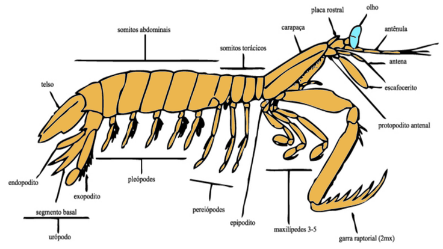

Fatos sobre o Stomatopoda:
Sistema taxonômico
- Nome científico: Odontodactylus scyllarus
- Reino: Animalia
- Filo: Arthropoda
- Subfilo: Crustacea
- Classe: Malacostraca
- Subclasse: Hoplocarida
- Ordem: Stomatopoda (Estomatópodes)
Olhos complexos:

Os camarões-mantis possuem olhos altamente desenvolvidos e complexos. Cada olho é dividido em três partes e pode mover-se independentemente um do outro.
Eles possuem uma visão binocular incrível e são capazes de enxergar uma ampla gama de cores.
Garras poderosas:
Os camarões-mantis possuem garras altamente especializadas, chamadas de raptoriais. Essas garras são muito fortes e afiadas, permitindo que eles capturem suas presas com extrema rapidez.
Suas garras podem se mover com uma velocidade impressionante, atingindo a velocidade de uma bala em relação ao tamanho do animal.
SOCOS SUPERSÔNICOS:

Alguns camarões-mantis possuem um mecanismo de ataque único conhecido como "soco supersônico".
Eles são capazes de acelerar suas garras com força extrema e criar bolhas de cavitação, que implodem com um som de estalo e uma onda de choque poderosa.
Esse ataque é rápido o suficiente para romper o exoesqueleto de suas presas.